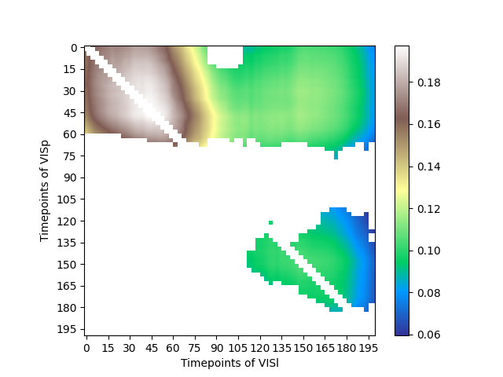
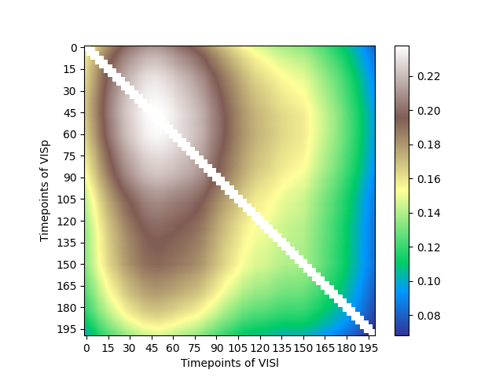
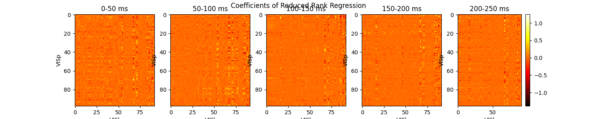

Allen project
This is the documentation of the previous experiments and the future directions of the Allen project (see Future directions). The entries are in reverse chronological order.
Entry structure:
- Date: the date of the experiment (documentation)
- Name/Commits: the corresponding commit names in git history
- Params: the parameters used in the experiment (see Parameters)
- Pipeline: the dvc pipeline code (see DVC framework)
- Results: the figures generated by the experiment (can be very long)
- What we see: The description of the results in words
- Interpretation: the interpretation of the results
- Next: the potential next steps or future directions in the project at that time
Table of Contents
- Allen project
- Table of Contents
- Future directions
- Layer-Rank Analysis
- New data layer distribution
- Memory bug
- Normalized maxValues
- Undersampling neurons
- Unit number statistics
- Gabor
- Layer interaction plot
- Layer in megaplot: first Blick
- LayerAssignment
- Units
- Layers
- After Progress Report
- Stimulus residual
- Stimuli
- Mega plot 2
- Mega plot 1
- V1 to V1
- RRR time slice
- Z-scoring
- Units table
- Crosstime timeseries of lags
- Time lag along trial time
- Time lag search
- Bottom-up lag
- Top-down lag exploration
- V2-V1 interaction rank
- Multiple session param search!!!
- Sessions
- V2 to V1
- RRR score by time
- Bootstrap above cv folds
- CV, timelag, timepoint exploration
- CV-rank-time exploration
- Time step
- Semedo
- Rank analysis from V2 to V1
- Rank analysis for gabor
- Control models
- Rank optimization
- Behav data
- GitHub codes
- Time lag between V1 and V2
- Siegle, 2021 on this data
- Areas
- Data distribution
- PCA
- RRR analysis along time
Future directions
- make predictions via the first d predictive dimensions. same area, cross area, …
- in the video, we can use seqPCA to extract the dims… only if its not a linear video…?
- RRR compared to CCA.
- mozgás controll új sessionokon is!
- túl széles time-bin, mindenbe belelóg, irreleváns lesz minden lag meg timepoint, szedd le 50-re
- idő mentén rank analysis? biztos hogy állandó?
- rankokkal játszani → pl kis rankok esetén milyen a mega-plot?
- rankok mérete grating VS natural images - bottom-up VS top-down
- neuronok száma
- undersample param-search
Layer-Rank Analysis
See references for more information.
Commits:
- Layer-Rank Analysis
- Layer-Rank Plot
Date: 2024.08.06.
- params
layer-rank:
cv: [2,3,4,5,6,7,8,9,10]
bestRank: 15
minRank: 5
maxRank: 25
stepRank: 1
timepoint: 100 # in milliseconds
- code
stages:
load:
cmd: python3 -u load_raw_activity_data.py
params:
- load
outs:
- data/raw-area-responses/
preprocess:
cmd: python3 -u preprocessing.py
deps:
- preprocessing.py
- data/raw-area-responses/
params:
- preprocess
outs:
- data/area-responses/
analysis:
cmd: python3 -u layer-rank-analysis.py
deps:
- layer-rank-analysis.py
- analyses/layer_rank.py
- data/area-responses/
- data/units/
params:
- load
- preprocess
- layer-rank
outs:
- results/layer-rank.pickle
plot:
cmd: python3 -u layer-rank-plot.py
deps:
- layer-rank-plot.py
- results/layer-rank.pickle
params:
- preprocess
outs:
- figures/layer-rank.png
Result:
Interpretation: Rank is independent from layers but dependent from time.
Next: simple rank-time analysis:
rank-plot:
cmd: python3 -u layer-rank-plot.py -rank
deps:
- layer-rank-plot.py
- results/layer-rank.pickle
params:
- preprocess
outs:
- figures/layer-rank.png
r2-plot:
cmd: python3 -u layer-rank-plot.py -r2
deps:
- layer-rank-plot.py
- results/layer-rank.pickle
params:
- preprocess
outs:
- figures/layer-rank.png
New data layer distribution
date: 2024.07.31.
Unique values in VISp: [6 5 4 2]
Ratio of value 6: 26.67%
Ratio of value 5: 43.33%
Ratio of value 4: 21.67%
Ratio of value 2: 8.33%
Unique values in VISl: [6 5 4 2]
Ratio of value 6: 16.22%
Ratio of value 5: 40.54%
Ratio of value 4: 32.43%
Ratio of value 2: 10.81%
Memory bug
date: 2024.07.29.
params:
- stimulus block: natural scene
new one:
>>> np.zeros((n_unit, n_trial, n_step))
numpy.core._exceptions.MemoryError: Unable to allocate 40.5 GiB for an array with shape (3651, 5950, 250) and data type float64
old one:
>>> print('Tensor shape:', tensor.shape)
Tensor shape: (165, 4805, 250)
solution:
Use units = session.units instead of units = cache.get_units()
Normalized maxValues
Date: 07.15.
Source: https://www.wikiwand.com/en/Coefficient_of_determination#Adjusted_R2
Formula:
$$ \bar{r^2}=1-(1-r^2)\frac{trials-1}{trials-neurons-1} $$
Result:
What we see:
- Bottom-up max r2 at 50-50 ms and at 140-160 ms
- Bottom-up from layer 2,5 to layer 4,5 later from 5,6 to 2
- Top-down max r2 at 50-60 ms and at 140-160 ms
- Top-down from layer 5,6 to layer 5,6 later from 5,6 to 6
Undersampling neurons
https://machinelearningmastery.com/random-oversampling-and-undersampling-for-imbalanced-classification/
https://datascience.stackexchange.com/questions/45046/cross-validation-for-highly-imbalanced-data-with-undersampling
https://imbalanced-learn.org/stable/references/generated/imblearn.under_sampling.RandomUnderSampler.html
Unit number statistics
Date: 2024.07.03.
across sessions
Code:
# Load the data
df = pd.read_csv('results/maxValues.csv')
df = df.set_index(['session', 'direction', 'slice', 'output layer', 'input layer'])
df = df.drop(1087720624, level='session')
mean = df.groupby(['direction', 'output layer']).mean()[['output layer units']].rename(columns={'output layer units': 'mean'})
std = df.groupby(['direction', 'output layer']).std()[['output layer units']].rename(columns={'output layer units': 'std'}) * 2
stat = pd.concat([mean, std], axis=1).rename(index={'LM-to-V1': 'LM', 'V1-to-LM': 'V1'})#.rename(level={'output layer': 'layer', 'direction': 'area'})
print(mean)
stat.plot.bar(y='mean', yerr='std')
plt.show()
Results:
| Area | Layer | Units_mean |
|---|---|---|
| LM | 2 | 14.138462 |
| 4 | 20.415385 | |
| 5 | 42.830769 | |
| 6 | 22.353846 | |
| V1 | 2 | 17.619718 |
| 4 | 20.873239 | |
| 5 | 37.295775 | |
| 6 | 20.901408 |
challange: the number of features (units) affecting the accuracy of the analysis.
- feature selection
- filter method:
- wrapper method:
- ensembled method: e.g. L1 (lasso) regularization
-
Model Evaluation Metrics (e.g. f1-score for binary classification):
Adjusted R-squared accounts for the number of features in your model. It penalizes adding irrelevant features that don’t improve prediction.
-
~~Ensemble Methods~~. its for improve the overall/common predictiveness, not to comparing.
todo:
- csak 5. réteg undersample, mi az alsó limit to good performance.
Gabor
Date: 2024.06.25
Name: Gabor
natural
Gabor
Layer interaction plot
See references for more information.
Name: Layer interaction plot
Date: 2024.06.14.-19.
- Pipeline
stages:
load:
cmd: python3 -u load_raw_activity_data.py
deps:
- load_raw_activity_data.py
params:
- load
outs:
- data/raw-area-responses/
layer-assignment:
cmd: python3 -u layer-assignment-analysis.py
deps:
- layer-assignment-analysis.py
- data/ccf_volumes/
params:
- load
outs:
- data/units/
analysis:
cmd: python3 -u layer-interaction-analysis.py
deps:
- layer-interaction-analysis.py
- data/units/
params:
- load
- crosstime
outs:
- results/layer-interaction_V1-to-LM.pickle
- results/layer-interaction_LM-to-V1.pickle
plots:
cmd: python3 -u layer-interaction-plot.py
deps:
- layer-interaction-plot.py
params:
- preprocess
outs:
- figures/layer-interaction_V1-to-LM.png
- figures/layer-interaction_LM-to-V1.png
javítandó:
- [x] session number in title
- [x] x and y axes ticks
- [x] neuronok száma
- [x] x-y axes label bug
Results:
Transient
- 1093864136, 1095340643
- transient representation to LM l4 and to V1 l4
- LM l2 ⇒ V1 l6
Causal direction of time
- 1091039376
- bottom-up l2 → l4, l5
- bottom-up predictive in the causal direction of time. ↔ top-down
- inkább bottom-up.
- top-down négyszigetes LM l5 → V1 l6 (l4), máshol transient
- itt a különbség, melyik layer a felelős az állandó aktivitásért.
- 1090803859
- bottom up l2 → l4, l5
- bottom-up predictive in the causal direction of time.
- csúcs 80 ms to V1 l6
- 1098119201
- bottom-up to l4 kevésbé függőleges vonal
- rather predictive in the causal direction of time.
- top-down LM l5 → V1 l2 l5 vízszintes
Negyszigetes


- 1111013640, 1081079981, 1048189115, 1049514117
- négyszigetes, inkább top-down a time causal kései response alapján, 50 ms alapján inkább bottom-up.
Egyiranyu: L alaku

- 1086200042
- bottom-up l5 → l2, l4
- top-down l2, l4 → l5
- bottom-up függőleges, top-down vízszintes
- főként top-down caught up
- 1067781390
- bottom-up to l2
- bottom-up függőleges, (tranzient)
- top-down l4, l6 → l2 vízszintes,
- top-down l4 → l6 függőleges
- top-down egyebütt transient
- 1055415082, 1052533639
- bottom-up to l2
- bottom-up függőleges, (tranzient)
- top-down L alakú l4, l5 → l6
- 1109889304
- LM l5 → V1 l4
- V1 l2 l5 → LM l5
Layer in megaplot: first Blick
See references for more information.
Name: LAYERPLOT.
Date: 2024.06.12.
- Pipeline
stages:
load:
cmd: python3 -u load_raw_activity_data.py
deps:
- load_raw_activity_data.py
params:
- load
outs:
- data/raw-area-responses/
layer-assignment:
cmd: python3 -u layer-assignment-analysis.py
deps:
- layer-assignment-analysis.py
- data/ccf_volumes/
params:
- load
outs:
- data/units/
plots:
cmd: python3 -u multiple-timeslices-layers.py
deps:
- multiple-timeslices-layers.py
- session-params-old.csv
- data/units/
params:
- load
- preprocess
- rrr-time-slice
- interaction-layers
outs:
- figures/rrr-cross-time-slice-mega-plot.png
- Params
interaction-layers:
V1:
input: [5] # [1, 2]
output: [2] # 2 is 2/3
LM:
input: [4]
output: [6]
Result:
What we see:
- activity at 50 ms in LM predicts activity in all time in V1
- activity at 180 ms in LM predicts activity in all time in V1
LayerAssignment
Date: 2024.06.11.
session: 1048189115
Unique values in VISp: [5 2 4 6]
Ratio of value 5: 33.63%
Ratio of value 2: 30.97%
Ratio of value 4: 22.12%
Ratio of value 6: 13.27%
Unique values in VISl: [5 2 4 6]
Ratio of value 5: 46.97%
Ratio of value 2: 9.09%
Ratio of value 4: 18.18%
Ratio of value 6: 25.76%
layerAssignments_V1.isin(neurmask['V1']['output'])
Units
Date: 2024.06.03
| units from table | units from session | |
|---|---|---|
| Load time | 0.06 s | 28.36 s |
| columns | ['ecephys_channel_id', 'ecephys_probe_id', 'ecephys_session_id', 'amplitude_cutoff', 'anterior_posterior_ccf_coordinate', 'dorsal_ventral_ccf_coordinate', 'left_right_ccf_coordinate', 'cumulative_drift', 'd_prime', 'structure_acronym', 'structure_id', 'firing_rate', 'isi_violations', 'isolation_distance', 'l_ratio', 'local_index', 'max_drift', 'nn_hit_rate', 'nn_miss_rate', 'presence_ratio', 'probe_horizontal_position', 'probe_vertical_position', 'silhouette_score', 'snr', 'quality', 'valid_data', 'amplitude', 'waveform_duration', 'waveform_halfwidth', 'PT_ratio', 'recovery_slope', 'repolarization_slope', 'spread', 'velocity_above', 'velocity_below'] | ['PT_ratio', 'amplitude', 'amplitude_cutoff', 'cluster_id', 'cumulative_drift', 'd_prime', 'firing_rate', 'isi_violations', 'isolation_distance', 'l_ratio', 'local_index', 'max_drift', 'nn_hit_rate', 'nn_miss_rate', 'peak_channel_id', 'presence_ratio', 'quality', 'recovery_slope', 'repolarization_slope', 'silhouette_score', 'snr', 'spread', 'velocity_above', 'velocity_below', 'waveform_duration'] |
|
| code | units_table = cache.get_unit_table() |
|
units_cache = units_table[units_table['ecephys_session_id'] == session_id] |
session = cache.get_ecephys_session(ecephys_session_id=session_id) |
|
units_session = session.get_units() |
||
| - code |
# %% Load the Allen Neuropixel dataset
# Load parameters
params = yaml.safe_load(open('params.yaml'))['load']
# An arbitrary session from the Allen Neuropixel dataset
session_id = params['session'] # 1064644573 # 1052533639
cache = cache_allen()
# %%
start = time.time()
units_table = cache.get_unit_table()
units_cache = units_table[units_table['ecephys_session_id'] == session_id]
end = time.time()
print('Elapsed time:', end - start)
start = time.time()
session = cache.get_ecephys_session(ecephys_session_id=session_id)
units_session = session.get_units()
end = time.time()
print('Elapsed time:', end - start)
ic(units_cache.columns)
print(units_cache)
ic(units_session.columns)
print(units_session)
Layers
Date: 2024.05.30.
params = yaml.safe_load(open('params.yaml'))['load']
# An arbitrary session from the Allen Neuropixel dataset
session_id = params['session'] # 1064644573 # 1052533639
cache = cache_allen()
session = cache.get_ecephys_session(ecephys_session_id=session_id)
from utils.ccf_volumes import (cortical_layer_assignment,
layer_assignment_to_channels)
units = cache.get_unit_table()
# Get the units that are assigned to the current session
units = units[units['ecephys_session_id'] == session_id]
units = cortical_layer_assignment(session, units)
# get the units that are assigned to a layer (no nan)
layer_assigned_units = units[units['layer'].notna()]
# Get the length of the layer assigned units and the total number of units
layer_assigned_units_len = len(layer_assigned_units)
total_units_len = len(units)
# Print the results
print('Layer assigned units:', layer_assigned_units_len)
print('Total units:', total_units_len)
print('Percentage:', layer_assigned_units_len / total_units_len * 100)
print()
print(layer_assigned_units)
Layer assigned units: 1925
Total units: 1925
Percentage: 100.0
ecephys_channel_id ecephys_probe_id ecephys_session_id amplitude_cutoff ... spread velocity_above velocity_below layer
output:
unit_id ...
1053057176 1053054953 1048320287 1048189115 0.304306 ... 80.0 0.892797 -0.343384 0
1053057218 1053055040 1048320287 1048189115 0.022801 ... 50.0 -0.686767 -0.686767 0
1053057217 1053055040 1048320287 1048189115 0.273037 ... 100.0 -0.480737 -0.745633 0
1053057134 1053054901 1048320287 1048189115 0.389520 ... 80.0 0.755444 -0.480737 0
1053057133 1053054901 1048320287 1048189115 0.270332 ... 90.0 0.412060 -0.215841 0
... ... ... ... ... ... ... ... ... ...
1053056643 1053054317 1048320283 1048189115 0.033838 ... 80.0 0.206030 0.412060 5
1053056642 1053054317 1048320283 1048189115 0.500000 ... 80.0 0.480737 -0.206030 5
1053056641 1053054317 1048320283 1048189115 0.000096 ... 80.0 0.206030 0.274707 5
1053056639 1053054317 1048320283 1048189115 0.000002 ... 80.0 0.343384 0.343384 5
1053056575 1053054258 1048320283 1048189115 0.003233 ... 70.0 0.000000 0.000000 1
[1925 rows x 36 columns]
After Progress Report
IPR 2024.05.27. & discussion with Gergő
Marci
proposal: stim nélküli időben nézni korrelációt V1-LM
result interpretation: local memory
debug
- [x] trial szám csúszás
- [x] nem stim resid is rosszabodik-e?
- [x] neurális adat változik vajon?
Stimulus residual
Name: STIMRESIDUAL
Date: 2024.05.15.
Result:
Session 1113751921
maximum value(0.024) at 0 ms is at cv=2, lag=0, rank=8
maximum value(0.024) at 50 ms is at cv=2, lag=0, rank=8
maximum value(0.024) at 100 ms is at cv=2, lag=0, rank=8
maximum value(0.024) at 150 ms is at cv=2, lag=0, rank=8

Stimuli
Date: 2024.05.09.

Mega plot 2
See references for more information.
Date: 2024.05.08.
Name:
- Pipeline:
stages:
load:
cmd: python3 -u load_raw_activity_data.py
deps:
- load_raw_activity_data.py
params:
- load
outs:
- data/raw-area-responses/
preprocess:
cmd: python3 -u preprocessing.py
deps:
- preprocessing.py
- data/raw-area-responses/
params:
- load
- preprocess
outs:
- data/area-responses/
plots:
cmd: python3 -u multiple-timeslices.py data/crosstime
deps:
- multiple-timeslices.py
# - results/cross-time-RRR.pickle
# - results/rrr-time-slice.pickle
params:
- load
- preprocess
- best-rrr-params
- rrr-time-slice
outs:
- figures/rrr-cross-time-slice-mega-plot.png
Most similar results:

Gergő:
- stimulusok feletti reziduális számolás (hogy stim repeticiók ….
- layerek
- dimenzionalitás (alacsonyabb rankkel jósolni
Mega plot 1
Date: 2024.05.08.
Name:
Results:
bottom-up: stabil kód visszafelé
top-down: tranziens kód


bottom-up: bifázisos kód (50 ms, 150 ms)
top-down: gyengülő jel/tranziens kód
V1 to V1
Date: 2024.05.06.

V1 -> V1 az a session (Fig 1: ...708) ahol a legstabilabb a kód (gyakran csak a diagonál barna, Fig2: ...624, note that itt is van asszimetrikus rész)
RRR time slice
See references for more information.
Name: SLICE.
Date: 2024.04.30.
- params
preprocess:
step-size: 0.010
- pipeline
stages:
load:
cmd: python3 -u load_raw_activity_data.py
deps:
- load_raw_activity_data.py
params:
- load
outs:
- data/raw-area-responses/
preprocess:
cmd: python3 -u preprocessing.py
deps:
- preprocessing.py
- data/raw-area-responses/
params:
- load
- preprocess
outs:
- data/area-responses/
analysis:
cmd: python3 -u rrr-time-slice-analysis.py
deps:
- rrr-time-slice-analysis.py
- data/area-responses/
params:
- rrr-time-slice
- load
- best-rrr-params
outs:
- results/rrr-time-slice.pickle
plots:
cmd: python3 -u rrr-time-slice-plot.py
deps:
- rrr-time-slice-plot.py
- results/rrr-time-slice.pickle
params:
- preprocess
outs:
- figures/rrr-time-slice.png
Results:
sessions: …84, …74, …03


Z-scoring
Hogy hol z-scoreozol (in window of interest vagy egész trial) az R^2-ben mindegy, de coefficiensben nem mindegy.
Esetleg z-score mean legyen ITI-ből.
Units table
General Metadata
ecephys_channel_id: unique ID of channel on which unit's peak waveform occurred
ecephys_probe_id: unique ID for probe on which unit was recorded
ecephys_session_id: unique ID for session during which unit was recorded
anterior_posterior_ccf_coordinate: CCF coord in the AP axis
dorsal_ventral_ccf_coordinate: CCF coord in the DV axis
left_right_ccf_coordinate: CCF coord in the left/right axis
structure_acronym: CCF acronym for area to which unit was assigned
structure_id: CCF structure ID for the area to which unit was assigned
probe_horizontal_position: Horizontal (perpindicular to shank) probe position of each unit's peak channel in microns
probe_vertical_position: Vertical (along shank) probe position of each unit's peak channel in microns
Waveform metrics: Look here for more detail on these metrics and the code that computes them. For the below descriptions the '1D waveform' is defined as the waveform on the peak channel. The '2D waveform' is the waveform across channels centered on the peak channel.
amplitude: Peak to trough amplitude for mean 1D waveform in microvolts
waveform_duration: Time from trough to peak for 1D waveform in milliseconds
waveform_halfwidth: Width of 1D waveform at half-amplitude in milliseconds
PT_ratio: Ratio of the max (peak) to the min (trough) amplitudes for 1D waveform
recovery_slope: Slope of recovery of 1D waveform to baseline after repolarization (coming down from peak)
repolarization_slope: Slope of repolarization of 1D waveform to baseline after trough
spread: Range of channels for which the spike amplitude was above 12% of the peak channel amplitude
velocity_above: Slope of spike propagation velocity traveling in dorsal direction from soma (note to avoid infinite values, this is actaully the inverse of velocity: ms/mm)
velocity_below: Slope of spike propagation velocity traveling in ventral direction from soma (note to avoid infinite values, this is actually the inverse of velocity: ms/mm)
snr: signal-to-noise ratio for 1D waveform
Quality metrics: Look here for more detail on these metrics and the code that computes them.
amplitude_cutoff: estimate of miss rate based on amplitude histogram (ie fraction of spikes estimated to have been below detection threshold)
cumulative_drift: cumulative change in spike depth along probe throughout the recording
d_prime: classification accuracy based on LDA
firing_rate: Mean firing rate over entire recording
isi_violations: Ratio of refractory violation rate to total spike rate
isolation_distance: Distance to nearest cluster in Mahalanobis space
l_ratio: The Mahalanobis distance and chi-squared inverse cdf are used to find the probability of cluster membership for each spike.
max_drift: Maximum change in unit depth across recording
nn_hit_rate: Fraction of nearest neighbors in PCA space for spikes in unit cluster that are also in unit cluster
nn_miss_rate: Fraction of nearest neighbors for spikes outside unit cluster than are in unit cluster
presence_ratio: Fraction of time during session for which a unit was spiking
silhouette_score: Standard metric for cluster overlap, computed in PCA space
quality: Label assigned based on waveform shape as described here. Either 'good' for physiological waveforms or 'noise' for artifactual waveforms.
Crosstime timeseries of lags
See references for more information.
Name: CROSSTIME.
Date: 2024.04.09., 10.
- Pipeline
stages:
load:
cmd: python3 -u load_raw_activity_data.py
deps:
- load_raw_activity_data.py
params:
- load
outs:
- data/raw-area-responses/
analysis:
cmd: python3 -u crosstime-analysis.py
deps:
- crosstime-analysis.py
- data/raw-area-responses/
params:
- load
- preprocess
- rrr
- best-rrr-params
- rrr-param-search
outs:
- results/cross-time-RRR.pickle
plot:
cmd: python3 -u crosstime-plot.py
deps:
- crosstime-plot.py
- results/cross-time-RRR.pickle
params:
- rrr-param-search
outs:
- figures/cross-time-RRR.png
- Params
preprocess:
areas: ["VISp", "VISl"] # "VISpm" # "VISm" has no spikes
lag-time: 0 # in milliseconds
lag-area: "VISl"
step-size: 0.010
bin-size: 0.100 # time-window in seconds # Joao's default: 0.100
stimulus-duration: 0.250 # in seconds
rrr-param-search:
cv: [3]
rank: [14]
lag: [100,105,110,115,120,125,130,135,140,145,150]
timepoints: [0]
duration: 0.250
time-bin: 0.050
time-step: 0.025
Sessions: …84, …74, …03, …40, …21, …64, …15, …17, …39, GEN2 …85, …981, …24, …36, …43, …01, …21
Top-down
GEN1:




GEN2:
Bottom-up
GEN1:


GEN2:


Within V1


Within LM


Interpretations
what we see:
- there is a correlation hub in the 50 ms between the two regions. This activity is partially correlated with the activity in both region until the 160th ms.
- There is an LM activity before the 50 ms hub, which is sustained and not correlated with the V1 activity (eigen subsoace)
- In the session no. …84 there is another activity from 100 to 150 ms, that is transferred from LM to V1.
-
Maybe also in session …15

-
whats next:
- more sessions ✅
- RRR within area ✅
- cortical layer selective RRR (wich is scientifically known to the inter brain areas connections) (RRR says little about the causality) → where is the layer information?
- célzott kérdésekre DLAG → MATLABból kell fordítani
Time lag along trial time
Name: LAGXTIME.
Date: 2024.04.02.
- Pipeline
stages:
load:
cmd: python3 -u load_raw_activity_data.py
deps:
- load_raw_activity_data.py
params:
- load
outs:
- data/raw-area-responses/
analysis:
cmd: python3 -u lag-along-time-analysis.py
deps:
- lag-along-time-analysis.py
- data/raw-area-responses/
params:
- load
- preprocess
- rrr
- rrr-param-search
- best-rrr-params
outs:
- results/lags-along-time.pickle
- results/max-lags-along-time.pickle
imshow:
cmd: python3 -u lags-along-time-plot.py
deps:
- lags-along-time-plot.py
- results/lags-along-time.pickle
params:
- preprocess
- rrr-param-search
outs:
- figures/lags-along-time.png
plot:
cmd: python3 -u max-lags-along-time-plot.py
deps:
- max-lags-along-time-plot.py
- results/max-lags-along-time.pickle
params:
- preprocess
- rrr-param-search
outs:
- figures/max-lags-along-time.png
Sessions: …40, …84, …74
Top-down:


Bottom-up:


Time lag search
See references for more information.
Name: LAGR2. LAGHANDL.
Date: 2024.03.21., 26., 27.
- Pipeline
stages:
load:
cmd: python3 -u load_raw_activity_data.py
deps:
- load_raw_activity_data.py
params:
- load
outs:
- data/raw-area-responses/
analysis:
cmd: python3 -u time-lag-search-analysis.py
deps:
- time-lag-search-analysis.py
- data/raw-area-responses/
params:
- load
- preprocess
- rrr
- rrr-param-search
- best-rrr-params
outs:
- results/time-lag-search.pickle
plots:
cmd: python3 -u time-lag-search-plot.py
deps:
- time-lag-search-plot.py
- results/time-lag-search.pickle
params:
- rrr-param-search
outs:
- figures/time-lag-search.png
Session: …40, …84, …74, …03
Top-down


Bottom-up


Bottom-up lag

Session: 1108334384
Lag: 4

Session: 1112302803
Lag: 4
Top-down lag exploration

Session: 1111013640
Lag: 4 ms

Session: 1108334384
Lag: 3 ms

Session: 1112515874
Lag: 5 ms

Session: 1112302803
Lag: 2 ms, 7 ms
V2-V1 interaction rank
Name: TDTIME, BUTIME, TDRANKTIME, BURANKTIME
Date: 2024.03.19.-20.
- rank-along-time pipeline
stages:
load:
cmd: python3 -u load_raw_activity_data.py
deps:
- load_raw_activity_data.py
params:
- load
outs:
- data/raw-area-responses/
analysis:
cmd: python3 -u rank-along-time-analysis.py
deps:
- rank-along-time-analysis.py
- data/raw-area-responses/
params:
- load
- preprocess
- rrr
- rrr-param-search
outs:
- results/max-ranks.pickle
plots:
cmd: python3 -u rank-along-time-plot.py
deps:
- rank-along-time-plot.py
- results/max-ranks.pickle
params:
- preprocess
outs:
- figures/max-ranks.png
Session: 1109889304 (100 ms
top-down
bottom-up

Session: 1108334384 (100 ms, cv2, rank14, lag0)
top-down

bottom-up


Session: 1112515874
top-down


bottom-up


Session: 1111013640
top-down


bottom-up


What we see:
- peak is at 0.05 s both top-down and bottom-up
- there is a second smaller peak right before 0.15 s, or slopy descend
Question:
- What is the geometry at the first and second peak? Similar or dissimilar?
Gergő:
- causality is can only be said by positive time lag!
- the low-dimensional correlation at the 0 and 6 ms lag is the same or not? → cross test between 0 and 6 ms lag
Multiple session param search!!!
See references for more intormation.
name: TOPDOWN
date: 2024.03.18.-19., 04.12.
- pipeline
stages:
load:
cmd: python3 -u load_raw_activity_data.py
deps:
- load_raw_activity_data.py
params:
- load
outs:
- data/raw-area-responses/
analysis:
cmd: python3 -u cv-time-lag-analysis.py
deps:
- cv-time-lag-analysis.py
- data/raw-area-responses/
params:
- load
- preprocess
- rrr
- rrr-param-search
outs:
- results/CV-lag-time.pickle
plots:
cmd: python3 -u cv-time-lag-plot.py
deps:
- cv-time-lag-plot.py
- results/CV-lag-time.pickle
params:
- preprocess
- rrr
- rrr-param-search
outs:
- figures/rrr-param-search.png
params:
- time-step 0.100
- time-window 0.100
preprocess:
step-size: 0.100 # time-step in seconds # 0.010
bin-size: 0.100 # time-window in seconds # Joao's default: 0.100
stimulus-duration: 0.250 # in seconds
rrr-param-search:
cv: [2,3,4,5]
rank: [2,4,6,8,10,12,14,16,18,20]
lag: [0,3,6]
timepoints: [0,100]
-
results
~~1059678195~~

maximum value(0.13) at 0 ms is at cv=4, lag=0, rank=14 maximum value(0.13) at 100 ms is at cv=4, lag=0, rank=14
V1→V2
All-NaN slice encountered
1108334384 (11-15%)

maximum value(0.111) at 0 ms is at cv=2, lag=0, rank=14 maximum value(0.111) at 100 ms is at cv=2, lag=0, rank=14
V1→V2

maximum value(0.158) at 0 ms is at cv=3, lag=0, rank=18 maximum value(0.158) at 100 ms is at cv=3, lag=0, rank=18
~~1108531612~~
Spike count in the data: 0 (0, 4803, 250) Spike count in the data: 1209114 (150, 4803, 250)
All-NaN
1109889304 (12-18%)
Spike count in the data: 984080 (131, 4804, 250) Spike count in the data: 965488 (93, 4804, 250)

maximum value(0.181) at 0 ms is at cv=5, lag=0, rank=18 maximum value(0.181) at 100 ms is at cv=5, lag=0, rank=18
window size 50 ms

maximum value(0.125) at 0 ms is at cv=3, lag=0, rank=12 maximum value(0.125) at 100 ms is at cv=3, lag=0, rank=12
V1→V2

maximum value(0.218) at 0 ms is at cv=2, lag=3, rank=8 maximum value(0.218) at 100 ms is at cv=2, lag=3, rank=8
1111013640 (10-12%)
Spike count in the data: 1246081 (147, 4800, 250) Spike count in the data: 952839 (129, 4800, 250)

maximum value(0.125) at 0 ms is at cv=2, lag=0, rank=16 maximum value(0.125) at 100 ms is at cv=2, lag=0, rank=16
V1→V2

maximum value(0.097) at 0 ms is at cv=2, lag=0, rank=16 maximum value(0.097) at 100 ms is at cv=2, lag=0, rank=16
~~1111216934~~
Spike count in the data: 930540 (110, 4796, 250) Spike count in the data: 475659 (62, 4796, 250)

maximum value(0.114) at 0 ms is at cv=2, lag=0, rank=12 maximum value(0.114) at 100 ms is at cv=2, lag=0, rank=12
V1→V2
All-NaN slice encountered
1112302803 (8%)
Spike count in the data: 954940 (121, 4798, 250) Spike count in the data: 1207317 (137, 4798, 250)

maximum value(0.075) at 0 ms is at cv=3, lag=0, rank=14 maximum value(0.075) at 100 ms is at cv=3, lag=0, rank=14

maximum value(0.089) at 0 ms is at cv=2, lag=0, rank=14 maximum value(0.089) at 100 ms is at cv=2, lag=0, rank=14
1112515874 (6-16%)
Spike count in the data: 336822 (28, 4796, 250) Spike count in the data: 554072 (65, 4796, 250)

maximum value(0.164) at 0 ms is at cv=3, lag=6, rank=12 maximum value(0.164) at 100 ms is at cv=3, lag=6, rank=12

maximum value(0.063) at 0 ms is at cv=2, lag=0, rank=12 maximum value(0.063) at 100 ms is at cv=2, lag=0, rank=12
1113751921 (8-13%)
V1→LM

maximum value(0.085) at 0 ms is at cv=2, lag=0, rank=10 maximum value(0.085) at 100 ms is at cv=2, lag=0, rank=10
LM →V1

maximum value(0.138) at 0 ms is at cv=4, lag=0, rank=20 maximum value(0.138) at 100 ms is at cv=4, lag=0, rank=20
1113957627 (12%)
LM → V1

maximum value(0.119) at 0 ms is at cv=3, lag=0, rank=10 maximum value(0.119) at 100 ms is at cv=3, lag=0, rank=10
V1 → LM all failed
1115077618: There is no spike in VISl
1115356973
V1 → LM all failed
1118324999: 18%
V1 → LM

maximum value(0.18) at 0 ms is at cv=4, lag=0, rank=16 maximum value(0.18) at 100 ms is at cv=4, lag=0, rank=16
LM → V1: all failed
1118512505: 28%
LM → V1

maximum value(0.278) at 0 ms is at cv=4, lag=0, rank=16 maximum value(0.278) at 100 ms is at cv=4, lag=0, rank=16
V1 → LM: all failed
Sessions
All ecephys sessions had this issue except those listed here: ~~1059678195~~, 1108334384, ~~1108531612~~, ~~1109680280~~, 1109889304, 1111013640, ~~1111216934~~, 1112302803, 1112515874, 1113751921, 1113957627, 1115077618, 1115356973, 1118324999, 1118512505
| performance | top-down | bottom-up | time lag | |
|---|---|---|---|---|
| 1111013640 | 10-12% | cv=2, rank=16 | cv=2, rank=16 | 4 |
| 1108334384 | 11-15% | cv=2, rank=14 | cv=3, rank=18 | 3 |
| 1112515874 | 6-16% | cv=3, lag=6, rank=12 | cv=2, rank=12 | 5 |
| 1112302803 | 8% | cv=3, rank=14 | cv=2, rank=14 | 2 |
| 1109889304 | 18-21% (NO 100ms) | cv=5, rank=18 | cv=2, lag=3, rank=8 | 6 |
V2 to V1
Date: 2024.02.28.
Session: 1064644573
cv: [2,3,4,5]
rank: [2,4,6,8,10,12,14,16,18,20]
lag: [0,3,6]
All model failed (both timewindow 50 and 100
RRR score by time
See references for more information.
Name: RRRSCORETIME.
Date: 2024.02.27.
- Pipeline
stages:
load:
cmd: python3 -u load_raw_activity_data.py
deps:
- load_raw_activity_data.py
params:
- load
outs:
- data/raw-area-responses/
preprocess:
cmd: python3 -u preprocessing.py
deps:
- preprocessing.py
- data/raw-area-responses/
params:
- preprocess
outs:
- data/area-responses/
analysis:
cmd: python3 -u rrr-score-time.py
deps:
- rrr-score-time.py
- data/area-responses/
params:
- preprocess
- rrr
outs:
- results/rrr-score-time.pickle
plots:
cmd: python3 -u rrr-score-time-plot.py
deps:
- rrr-score-time-plot.py
- results/rrr-score-time.pickle
params:
- preprocess
- rrr
outs:
- figures/rrr-score-time.png
Params:
- Time window: 50 ms
- Time step: 10 ms
Results:

Bootstrap above cv folds
Date: 2024.02.27.
- Code
cv=2
rank=8
t=1
# Define the cross-validation strategy
cv_gen = ShuffleSplit(n_splits=10, test_size=1/cv, random_state=0)
# Run cross-validation
scores = RRRR(X[:,:,t].T, Y[:,:,t].T, rank=rank, cv=cv_gen, log=False)
# Mean score
# print('Mean score:', np.mean(scores['test_score']))
# Print the scores of the different cross-validation folds
print(scores['test_score'])
Params:
- time window: 50 ms
Result:
[0.14546037 0.1439828 0.1444211 0.14555954 0.14235154 0.14418097
0.14210302 0.14476292 0.14729195 0.14400448]
Interpretation: CV=2 is OK.
CV, timelag, timepoint exploration
Name: CVLAGTIME-ANALYSIS. CVLAGRANKTIME.
Date: 2024.02.26-27.
- Pipeline
stages:
load:
cmd: python3 -u load_raw_activity_data.py
deps:
- load_raw_activity_data.py
params:
- load
outs:
- data/raw-area-responses/
analysis:
cmd: python3 -u cv-time-lag-analysis.py
deps:
- cv-time-lag-analysis.py
- data/raw-area-responses/
params:
- load
- preprocess
- rrr
- rrr-param-search
outs:
- results/CV-lag-time.pickle
plots:
cmd: python3 -u cv-time-lag-plot.py
deps:
- cv-time-lag-plot.py
- results/CV-lag-time.pickle
params:
- preprocess
- rrr
- rrr-param-search
outs:
- figures/CV-timelag.png
Params:
- rank: 8
- time window: 50 ms
Results:
-
Lag 0, 2, 4, 6
Interpretation:
- time lag < 6 ms
- At time
50-100 ms, the optimal lag is0 ms- The second best is
2 mslag at time50-100 msand150-200 ms
- The second best is
- On CV
2 folds, the optimal Lag is2, 4 ms- The second best is
2 msat CV4 folds
- The second best is
- Lag 0, 1, 2, 3

Interpretation:
- At time
50-100 ms, the optimal lag is0 ms- The second best is
1 mslag at time50-100 ms
- The second best is
- On CV
2 folds, the optimal Lag is1, 2 ms- The second best is
0 msat CV2 folds
- The second best is
maximum value (0.081) is at cv=4, lag=0, time=50
maximum value (0.085) is at cv=4, lag=0, rank=12, time=50ms
maximum value (0.086) is at cv=4, lag=0, rank=11, time=50ms
- all succesful model
lag 0:
CV: 2, Rank: 8, Mean test score: 0.03201875490380125
CV: 2, Rank: 8, Mean test score: 0.049927248709457306
CV: 2, Rank: 10, Mean test score: 0.022322323390729783
CV: 2, Rank: 10, Mean test score: 0.05349610883936824
CV: 2, Rank: 11, Mean test score: 0.05315925285586909
CV: 2, Rank: 12, Mean test score: 0.052840592630864505
CV: 2, Rank: 13, Mean test score: 0.05191762385869492
CV: 2, Rank: 14, Mean test score: 0.05184995660560535
CV: 3, Rank: 8, Mean test score: 0.07135646956690475
CV: 3, Rank: 8, Mean test score: 0.05719398436702671
CV: 3, Rank: 8, Mean test score: 0.02339548877129166
CV: 3, Rank: 10, Mean test score: 0.0633966003181519
CV: 3, Rank: 10, Mean test score: 0.06005307370804186
CV: 3, Rank: 10, Mean test score: 0.023503122594245005
CV: 3, Rank: 11, Mean test score: 0.06317631165339903
CV: 3, Rank: 11, Mean test score: 0.06112536866824452
CV: 3, Rank: 11, Mean test score: 0.023802242484427746
CV: 3, Rank: 12, Mean test score: 0.06597397657250023
CV: 3, Rank: 12, Mean test score: 0.06180256381254188
CV: 3, Rank: 12, Mean test score: 0.023333892825463994
CV: 3, Rank: 13, Mean test score: 0.06460023900401318
CV: 3, Rank: 13, Mean test score: 0.06318522145727225
CV: 3, Rank: 13, Mean test score: 0.022124711238206234
CV: 3, Rank: 14, Mean test score: 0.06384509391383798
CV: 3, Rank: 14, Mean test score: 0.06336658862346407
CV: 3, Rank: 14, Mean test score: 0.022174089424562785
CV: 4, Rank: 8, Mean test score: 0.08053730811603779
CV: 4, Rank: 8, Mean test score: 0.048252551269832356
CV: 4, Rank: 8, Mean test score: 0.019233428702738354
CV: 4, Rank: 10, Mean test score: 0.08269683049663624
CV: 4, Rank: 10, Mean test score: 0.052297734551015024
CV: 4, Rank: 10, Mean test score: 0.019285387583393654
CV: 4, Rank: 11, Mean test score: 0.08597487376314111
CV: 4, Rank: 11, Mean test score: 0.053008574859848986
CV: 4, Rank: 11, Mean test score: 0.019259621346014142
CV: 4, Rank: 12, Mean test score: 0.08548234358472524
CV: 4, Rank: 12, Mean test score: 0.052974732186628674
CV: 4, Rank: 12, Mean test score: 0.017439772376426382
CV: 4, Rank: 13, Mean test score: 0.08515425098552482
CV: 4, Rank: 13, Mean test score: 0.05306204079328371
CV: 4, Rank: 13, Mean test score: 0.016415278431215635
CV: 4, Rank: 14, Mean test score: 0.08509384785496672
CV: 4, Rank: 14, Mean test score: 0.052844715308502946
CV: 4, Rank: 14, Mean test score: 0.0156077599192398
CV: 5, Rank: 8, Mean test score: 0.07161593565637613
CV: 5, Rank: 8, Mean test score: 0.01480060916855867
CV: 5, Rank: 10, Mean test score: 0.0710629204210168
CV: 5, Rank: 10, Mean test score: 0.012543656424523028
CV: 5, Rank: 11, Mean test score: 0.07501833950350371
CV: 5, Rank: 11, Mean test score: 0.012510782472159792
CV: 5, Rank: 12, Mean test score: 0.07537728842402695
CV: 5, Rank: 12, Mean test score: 0.012168573006751008
CV: 5, Rank: 13, Mean test score: 0.0759284833725914
CV: 5, Rank: 13, Mean test score: 0.011805850439297164
CV: 5, Rank: 14, Mean test score: 0.07471379946251691
CV: 5, Rank: 14, Mean test score: 0.010920716345304088
CV: 6, Rank: 8, Mean test score: 0.05463846503412088
CV: 6, Rank: 10, Mean test score: 0.05697794981796168
CV: 6, Rank: 11, Mean test score: 0.059212838407945334
CV: 6, Rank: 12, Mean test score: 0.058260540074825284
CV: 6, Rank: 13, Mean test score: 0.05857791379639099
CV: 6, Rank: 14, Mean test score: 0.05268225272107676
More params
Less params #1
maximum value (0.033) is at cv=3, lag=0, rank=10, time=100ms

Interpretation:
- Lag 0 is far better then other independent of rank
- Rank 10 is the best.
- CV 3 (or 2
Less params #2
maximum value (0.033) is at cv=3, lag=0, rank=9, time=100ms
- Time window 25 ms:
maximum value(0.044) at 50 ms is at cv=2, lag=0, rank=9
maximum value(0.044) at 75 ms is at cv=2, lag=0, rank=9
maximum value(0.044) at 100 ms is at cv=2, lag=0, rank=9
maximum value(0.044) at 125 ms is at cv=2, lag=0, rank=9
- Time window 50 ms:
maximum value(0.086) at 50 ms is at cv=4, lag=0, rank=11
maximum value(0.086) at 100 ms is at cv=4, lag=0, rank=11
maximum value(0.086) at 150 ms is at cv=4, lag=0, rank=11
- Time window 100 ms:
maximum value(0.085) at 0 ms is at cv=3, lag=0, rank=16
maximum value(0.085) at 100 ms is at cv=3, lag=0, rank=16
Interpretation:
- optimal time window: 50 ms
- time lag: 0 ms
- optimal CV fold: 4
- optimal rank: 11
here the $r^2$ is 0.086
CV-rank-time exploration
See references for more information.
Date: 2024.02.21.
Results:

Detailed

Time step
Name: TIMESTEP, TIMESTEP2
Date: 2024.02.20.
Semedo
qualitatively similar results for a wide range of bin widths
- sliding time window
Rank analysis from V2 to V1
Date: 2024.02.20.
Params:
- stimulus-block: 5
Result: doesnt work for CV 2, 4
Rank analysis for gabor
Date: 2024.02.20.
Params:
- stimulus-block: 2
Result: doesnt work for CV 2, 5, 10
Interpretation: stimulus is too sparse
Control models
See references for more information.
Name: RRRCONTROL.
Date: 2024.02.15., 20.
- Pipeline
stages:
preprocess:
cmd: python3 -u preprocessing.py
deps:
- preprocessing.py
params:
- preprocess
outs:
- data/area-responses/
behav-preprocess:
cmd: python3 -u behav-preprocessing.py
deps:
- behav-preprocessing.py
params:
- preprocess
outs:
- data/behav-responses/
analysis:
cmd: python3 -u control-models.py
deps:
- control-models.py
- data/area-responses/
- data/behav-responses/
params:
- preprocess
- rrr
outs:
- figures/control-models.png
Params:
- stimulus block: 5 # passive replay
- rank: 8
-
Results
cv folds: 2

cv folds: 3

cv folds: 4

cv folds: 5
Interpretation:
does the normaliyation give us indistinguishable values for movement and spiking? print these values .
Rank optimization
See references for more information.
Name: RANKOPT. RANKOPTTIME. RANKOPTCV.
Date: 2024.02.13., 17-21.
- Pipeline
stages:
preprocess:
cmd: python3 -u preprocessing.py
deps:
- preprocessing.py
params:
- cache
- preprocess
outs:
- data/area-responses/
analysis:
cmd: python3 -u rrr-rank-analysis.py
deps:
- rrr-rank-analysis.py
- data/area-responses/
params:
- preprocess
- rrr
outs:
- results/VISp_VISl_cross-time-test-scores.pickle
plots:
cmd: python3 -u rrr-rank-plot.py
deps:
- rrr-rank-plot.py
- results/VISp_VISl_cross-time-test-scores.pickle
params:
- preprocess
- rrr
- rrr-plot
outs:
- figures/V1-V2_cross-time_RRR-rank-analysis-2DIM.png
- figures/V1-V2_cross-time_RRR-rank-analysis-timewise.png
- figures/V1-V2_cross-time_RRR-rank-analysis-averaged-over-time.png
Params:
- stimulus block: 5 (passive replay)
- CV: 5
Results:
-
minmax score
Optimal rank: 8
Leave out / discard first 500 ms (see also):


Optimal rank: 41
z-score
-
egyesével…
cv folds: 3

Optimal rank for 0-50 ms: 1 Optimal rank for 50-100 ms: 8 Optimal rank for 100-150 ms: 14 Optimal rank for 150-200 ms: 3 Optimal rank for 200-250 ms: 8

Optimal rank over time: 7
cv folds: 5


Optimal rank for 50-100 ms: 8 Optimal rank for 100-150 ms: 1 (negative!!! Optimal rank for 150-200 ms: 8 Optimal rank for 200-250 ms: 1 (negative!!!
step size: 50 ms time window: 25 ms


Optimal rank: 12 cv of the optimal rank: 3
step size: 25 ms time window: 25 ms


Optimal rank: 27 ? cv of the optimal rank: 2

Conclusions:
- Optimal rank is 8.
- Probably we have to make the movement control first
- negative values mean that the model is wrong…
- greater ranks perform worse bcs overfitting? so there are times when we cannot predict V2 from V1.
Behav data

stimulus-duration: 250 ms (movement!)
at Joao Semedo: 1250 ms (not contaminated by movement)
GitHub codes
preprocessing and unit metrics
data acquisition/neuropixels3a
data acquisition/neuropixelsPXI
Time lag between V1 and V2
See references for more information.
Name: CROSSTIMELAG. CROSSTIMECOEFFS.
Date: 2024.02.08., 22.
- Pipeline
stages:
load:
cmd: python3 -u load_raw_activity_data.py
deps:
- load_raw_activity_data.py
params:
- load
outs:
- data/raw-area-responses/
preprocess:
cmd: python3 -u preprocessing.py
deps:
- data/raw-area-responses/
- preprocessing.py
params:
- cache
- preprocess
outs:
- data/area-responses/
analysis:
cmd: python3 -u time_lag_analysis.py
deps:
- data/area-responses/
- time_lag_analysis.py
params:
- preprocess
- rrr
outs:
- results/VISp_VISl_cross-time-coeffs.pickle
- results/VISp_VISl_cross-time-lag.pickle
plots:
cmd: python3 -u time_lag_plot.py
deps:
- results/VISp_VISl_cross-time-coeffs.pickle
- time_lag_plot.py
params:
- preprocess
outs:
- figures/Time_lag_between_V1_LM.png
Motivation: What is the time lag between the V1 and LM?
- Expected: 30-50 ms? (Marci)
- Will the time-binning effect on the V1-LM correlation analysis?
- Data exploration
Method:
- RRR analysis on V1 and LM activity averaged over neurons
Params:
- bin size: 5 ms
- stimulus block: 5 (passive replay)
- RRR rank: 10
- CV: 5
Results:
- Time lag between V1 and V2: ~5 ms
Cross-validation scores: [-1.62523803e+28 -2.47969342e+28 -1.52222458e+28]
With CV=[2,3,4,5,6] and ranks=[3,4,5,6,7,8,9,10,11,12,13,14] the Max score is NaN:
stages:
load:
cmd: python3 -u load_raw_activity_data.py
deps:
- load_raw_activity_data.py
params:
- load
outs:
- data/raw-area-responses/
preprocess:
cmd: python3 -u preprocessing.py
deps:
- data/raw-area-responses/
- preprocessing.py
params:
- cache
- preprocess
outs:
- data/area-responses/
analysis:
cmd: python3 -u cv-rank-cross-time.py
deps:
- data/area-responses/
- cv-rank-cross-time.py
params:
- preprocess
- rrr
outs:
- figures/CV-rank_cross-time.png
What we see:
- The correlation starts at 35-55 ms
- Interpretation: stim reach V1
- What is that black thing after 100 ms? The activity of LM becomes more sophisticated and less dependent on the V1?
- Probably the top-down effect? (bcs here we predicted V2 from V1)
Interpretation: not usable!
What are the others saying:
Siegle, 2021 (below):
- An example cross-area ‘sharp peak’ spiking interaction between a pair of units in V1 and LM (Fig2c)
- Distribution of CCG peak time lags between V1 and LM in one example mouse. The median is 3.9 ms (Fig2d)
Gergő:
- time lag over time
Whats next:
- read Joao Semedo
- ~~behav data into notion~~
- ~~choose rank by calculating reconstruction error?~~
- ~~Marci controls (R^2, Corr)~~
- ~~VISp→VISl, VISl→VISp~~
- change task (motor contam) OR movie
- (Bernstein)
Siegle, 2021 on this data
Survey of spiking in the mouse visual system reveals functional hierarchy


Areas
Added VISpm (MT) and VISm (motion area) to analyses for video stimuli.
Date: 2024.02.06.
VISp: V1
VISpl: ?
VISli: ? (visually guided behav)
VISl: V2 (LM)?
VISal: anteromedial cuneus
VISlla: ?
VISrl: ?(visually guided behav)
VISam: anteromedial cuneus
VISpm: V4-V5(MT), PMC (associative area)
VISm: V6 (medial motion area)
Data distribution
See references for more information.
Date: 2024.02.06.
Method: Shapiro-Wilk test.
Params:
- stimulus block: 5 (passive replay)
- area: V1
Result:
- The data does not look Gaussian nor per unit, nor per timebin
Statistics=0.601, p=0.000
Sample does not look Gaussian (reject H0)
Statistics=0.538, p=0.000
Activity does not look Gaussian in time 0 (reject H0)
Statistics=0.632, p=0.000
Activity does not look Gaussian in time 1 (reject H0)
Statistics=0.614, p=0.000
Activity does not look Gaussian in time 2 (reject H0)
Statistics=0.607, p=0.000
Activity does not look Gaussian in time 3 (reject H0)
Statistics=0.608, p=0.000
Activity does not look Gaussian in time 4 (reject H0)
Statistics=0.573, p=0.000
Activity of 0. unit does not look Gaussian (reject H0)
Statistics=0.102, p=0.000
Activity of 1. unit does not look Gaussian (reject H0)
Statistics=0.794, p=0.000
Activity of 2. unit does not look Gaussian (reject H0)
Statistics=0.090, p=0.000
Activity of 3. unit does not look Gaussian (reject H0)
Statistics=0.119, p=0.000
Activity of 4. unit does not look Gaussian (reject H0)
Statistics=0.082, p=0.000
Activity of 5. unit does not look Gaussian (reject H0)
Statistics=0.064, p=0.000
Activity of 6. unit does not look Gaussian (reject H0)
Statistics=0.402, p=0.000
Activity of 7. unit does not look Gaussian (reject H0)
Statistics=0.510, p=0.000
Activity of 8. unit does not look Gaussian (reject H0)
Statistics=0.248, p=0.000
Activity of 9. unit does not look Gaussian (reject H0)
Statistics=0.382, p=0.000
Activity of 10. unit does not look Gaussian (reject H0)
Statistics=0.311, p=0.000
Activity of 11. unit does not look Gaussian (reject H0)
Statistics=0.076, p=0.000
Activity of 12. unit does not look Gaussian (reject H0)
Statistics=0.428, p=0.000
Activity of 13. unit does not look Gaussian (reject H0)
Statistics=0.693, p=0.000
Activity of 14. unit does not look Gaussian (reject H0)
Statistics=0.250, p=0.000
Activity of 15. unit does not look Gaussian (reject H0)
Statistics=0.553, p=0.000
Activity of 16. unit does not look Gaussian (reject H0)
Statistics=0.113, p=0.000
Activity of 17. unit does not look Gaussian (reject H0)
Statistics=0.705, p=0.000
Activity of 18. unit does not look Gaussian (reject H0)
Statistics=0.049, p=0.000
Activity of 19. unit does not look Gaussian (reject H0)
Statistics=0.084, p=0.000
Activity of 20. unit does not look Gaussian (reject H0)
Statistics=0.223, p=0.000
Activity of 21. unit does not look Gaussian (reject H0)
Statistics=0.493, p=0.000
Activity of 22. unit does not look Gaussian (reject H0)
Statistics=0.320, p=0.000
Activity of 23. unit does not look Gaussian (reject H0)
Statistics=0.850, p=0.000
Activity of 24. unit does not look Gaussian (reject H0)
Statistics=0.397, p=0.000
Activity of 25. unit does not look Gaussian (reject H0)
Statistics=0.710, p=0.000
Activity of 26. unit does not look Gaussian (reject H0)
Statistics=0.362, p=0.000
Activity of 27. unit does not look Gaussian (reject H0)
Statistics=0.599, p=0.000
Activity of 28. unit does not look Gaussian (reject H0)
Statistics=0.543, p=0.000
Activity of 29. unit does not look Gaussian (reject H0)
Statistics=0.353, p=0.000
Activity of 30. unit does not look Gaussian (reject H0)
Statistics=0.429, p=0.000
Activity of 31. unit does not look Gaussian (reject H0)
Statistics=0.562, p=0.000
Activity of 32. unit does not look Gaussian (reject H0)
Statistics=0.347, p=0.000
Activity of 33. unit does not look Gaussian (reject H0)
Statistics=0.599, p=0.000
Activity of 34. unit does not look Gaussian (reject H0)
Statistics=0.299, p=0.000
Activity of 35. unit does not look Gaussian (reject H0)
Statistics=0.682, p=0.000
Activity of 36. unit does not look Gaussian (reject H0)
Statistics=0.590, p=0.000
Activity of 37. unit does not look Gaussian (reject H0)
Statistics=0.834, p=0.000
Activity of 38. unit does not look Gaussian (reject H0)
Statistics=0.482, p=0.000
Activity of 39. unit does not look Gaussian (reject H0)
Statistics=0.364, p=0.000
Activity of 40. unit does not look Gaussian (reject H0)
Statistics=0.619, p=0.000
Activity of 41. unit does not look Gaussian (reject H0)
Statistics=0.684, p=0.000
Activity of 42. unit does not look Gaussian (reject H0)
Statistics=0.696, p=0.000
Activity of 43. unit does not look Gaussian (reject H0)
Statistics=0.695, p=0.000
Activity of 44. unit does not look Gaussian (reject H0)
Statistics=0.673, p=0.000
Activity of 45. unit does not look Gaussian (reject H0)
Statistics=0.331, p=0.000
Activity of 46. unit does not look Gaussian (reject H0)
Statistics=0.733, p=0.000
Activity of 47. unit does not look Gaussian (reject H0)
Statistics=0.620, p=0.000
Activity of 48. unit does not look Gaussian (reject H0)
Statistics=0.347, p=0.000
Activity of 49. unit does not look Gaussian (reject H0)
Statistics=0.604, p=0.000
Activity of 50. unit does not look Gaussian (reject H0)
Statistics=0.321, p=0.000
Activity of 51. unit does not look Gaussian (reject H0)
Statistics=0.310, p=0.000
Activity of 52. unit does not look Gaussian (reject H0)
Statistics=0.585, p=0.000
Activity of 53. unit does not look Gaussian (reject H0)
Statistics=0.448, p=0.000
Activity of 54. unit does not look Gaussian (reject H0)
Statistics=0.411, p=0.000
Activity of 55. unit does not look Gaussian (reject H0)
Statistics=0.858, p=0.000
Activity of 56. unit does not look Gaussian (reject H0)
Statistics=0.466, p=0.000
Activity of 57. unit does not look Gaussian (reject H0)
Statistics=0.584, p=0.000
Activity of 58. unit does not look Gaussian (reject H0)
Statistics=0.328, p=0.000
Activity of 59. unit does not look Gaussian (reject H0)
Statistics=0.695, p=0.000
Activity of 60. unit does not look Gaussian (reject H0)
Statistics=0.341, p=0.000
Activity of 61. unit does not look Gaussian (reject H0)
Statistics=0.826, p=0.000
Activity of 62. unit does not look Gaussian (reject H0)
Statistics=0.696, p=0.000
Activity of 63. unit does not look Gaussian (reject H0)
Statistics=0.558, p=0.000
Activity of 64. unit does not look Gaussian (reject H0)
Statistics=0.474, p=0.000
Activity of 65. unit does not look Gaussian (reject H0)
Statistics=0.639, p=0.000
Activity of 66. unit does not look Gaussian (reject H0)
Statistics=0.304, p=0.000
Activity of 67. unit does not look Gaussian (reject H0)
Statistics=0.901, p=0.000
Activity of 68. unit does not look Gaussian (reject H0)
Statistics=0.770, p=0.000
Activity of 69. unit does not look Gaussian (reject H0)
Statistics=0.714, p=0.000
Activity of 70. unit does not look Gaussian (reject H0)
Statistics=0.720, p=0.000
Activity of 71. unit does not look Gaussian (reject H0)
Statistics=0.796, p=0.000
Activity of 72. unit does not look Gaussian (reject H0)
Statistics=0.779, p=0.000
Activity of 73. unit does not look Gaussian (reject H0)
Statistics=0.821, p=0.000
Activity of 74. unit does not look Gaussian (reject H0)
Statistics=0.890, p=0.000
Activity of 75. unit does not look Gaussian (reject H0)
Statistics=0.538, p=0.000
Activity of 76. unit does not look Gaussian (reject H0)
Statistics=0.790, p=0.000
Activity of 77. unit does not look Gaussian (reject H0)
Statistics=0.255, p=0.000
Activity of 78. unit does not look Gaussian (reject H0)
Statistics=0.860, p=0.000
Activity of 79. unit does not look Gaussian (reject H0)
Statistics=0.305, p=0.000
Activity of 80. unit does not look Gaussian (reject H0)
Statistics=0.477, p=0.000
Activity of 81. unit does not look Gaussian (reject H0)
Statistics=0.527, p=0.000
Activity of 82. unit does not look Gaussian (reject H0)
Statistics=0.605, p=0.000
Activity of 83. unit does not look Gaussian (reject H0)
Statistics=0.529, p=0.000
Activity of 84. unit does not look Gaussian (reject H0)
Statistics=0.897, p=0.000
Activity of 85. unit does not look Gaussian (reject H0)
Statistics=0.826, p=0.000
Activity of 86. unit does not look Gaussian (reject H0)
Statistics=0.548, p=0.000
Activity of 87. unit does not look Gaussian (reject H0)
Statistics=0.548, p=0.000
Activity of 88. unit does not look Gaussian (reject H0)
Statistics=0.654, p=0.000
Activity of 89. unit does not look Gaussian (reject H0)
Statistics=0.701, p=0.000
Activity of 90. unit does not look Gaussian (reject H0)
Statistics=0.743, p=0.000
Activity of 91. unit does not look Gaussian (reject H0)
Statistics=0.739, p=0.000
Activity of 92. unit does not look Gaussian (reject H0)
Statistics=0.268, p=0.000
Activity of 93. unit does not look Gaussian (reject H0)
Statistics=0.657, p=0.000
Activity of 94. unit does not look Gaussian (reject H0)
Statistics=0.928, p=0.000
Activity of 95. unit does not look Gaussian (reject H0)
Statistics=0.608, p=0.000
Activity of 96. unit does not look Gaussian (reject H0)
Statistics=0.613, p=0.000
Activity of 97. unit does not look Gaussian (reject H0)
Statistics=0.458, p=0.000
Activity of 98. unit does not look Gaussian (reject H0)
Statistics=0.505, p=0.000
Activity of 99. unit does not look Gaussian (reject H0)
Statistics=0.474, p=0.000
Activity of 100. unit does not look Gaussian (reject H0)
Statistics=0.646, p=0.000
Activity of 101. unit does not look Gaussian (reject H0)
Statistics=0.306, p=0.000
Activity of 102. unit does not look Gaussian (reject H0)
Statistics=0.684, p=0.000
Activity of 103. unit does not look Gaussian (reject H0)
Statistics=0.664, p=0.000
Activity of 104. unit does not look Gaussian (reject H0)
Statistics=0.720, p=0.000
Activity of 105. unit does not look Gaussian (reject H0)
Statistics=0.806, p=0.000
Activity of 106. unit does not look Gaussian (reject H0)
Statistics=0.845, p=0.000
Activity of 107. unit does not look Gaussian (reject H0)
Statistics=0.874, p=0.000
Activity of 108. unit does not look Gaussian (reject H0)
Statistics=0.328, p=0.000
Activity of 109. unit does not look Gaussian (reject H0)
Statistics=0.357, p=0.000
Activity of 110. unit does not look Gaussian (reject H0)
Statistics=0.417, p=0.000
Activity of 111. unit does not look Gaussian (reject H0)
Statistics=0.647, p=0.000
Activity of 112. unit does not look Gaussian (reject H0)
Statistics=0.576, p=0.000
Activity of 113. unit does not look Gaussian (reject H0)
Statistics=0.781, p=0.000
Activity of 114. unit does not look Gaussian (reject H0)
Statistics=0.840, p=0.000
Activity of 115. unit does not look Gaussian (reject H0)
Statistics=0.669, p=0.000
Activity of 116. unit does not look Gaussian (reject H0)
Statistics=0.785, p=0.000
Activity of 117. unit does not look Gaussian (reject H0)
Statistics=0.842, p=0.000
Activity of 118. unit does not look Gaussian (reject H0)
Conclusion: Use normalization instead of standardization
Discussion:
Marci (2024.02.14.): ITI mean + std, csak nem z-scorenak hívjuk, mert nem normal-distr data. → Normalize based on ITI activity?
PCA
See references for more information.
Date: 2024.02.06.
Params:
- stimulus block: 5 (natural images)
- area: V1, V2
Results:

RRR analysis along time
See references for more information.
Name: RRR ANALYSIS ALONG TIME.
Date: 2024.01.30. Modified: 2024.01.31.
- Pipeline
stages:
preprocess:
cmd: python3 -u preprocessing.py
params:
- preprocess
outs:
- data/area-responses/
rrr_analysis:
cmd: python3 -u rrr_analysis.py
deps:
- data/area-responses/
params:
- cache
- rrr
outs:
- results/rrr_coefficients.pickle
plots:
cmd: python3 -u rrr_plot.py
deps:
- results/rrr_coefficients.pickle
params:
- rrr
outs:
- figures/VISl-VISp_block-2_rrr-coefficients_along_time.png
Params:
- CV: 5
- stimulus block: 2 (receptive field mapping by gabor stimuli) and 4 (full field flashes)
- rank: 10
- stimulus duration: 0.250 s (bcs this is the average time between stimuli)
- bin size: 0.050 s (imported from ACC analysis)
Result:
Gabor stimuli:
Gabor stimuli averaged:
Flashes:

Description:
Interpretation:
Questions:
- What is the difference if we see V1 level stimuli or higher order stimuli?
- TODO: stimulus block 0/5 (change detection task)
- How can we order the cells? Which cell has “predictive power”…?
- How to choose the rank? joao (mit mond pl a mi egér sparse adatunk). test likelihood maximalization (score) MSE (gyakori, de sajnos gyakran lapos. startler)
- Cross-Validation: This is a common method where the data is split into a training set and a validation set. The rank
ris chosen such that it minimizes the prediction error on the validation set. - Information Criteria: Criteria like Akaike Information Criterion (AIC) or Bayesian Information Criterion (BIC) can be used. These criteria trade-off the goodness of fit of the model against the complexity (in terms of the rank
r). - Eigenvalue Plot: In the context of RRR, one can plot the eigenvalues obtained from the eigenvector problem. If there is a clear ‘elbow’ or ‘knee’ in this plot (a point where the decrease in eigenvalues becomes less steep), this may be a good choice for
r. - Domain Knowledge: If you have specific knowledge about the underlying structure of your data or the specific problem at hand, this might inform a good choice of
r.
- Cross-Validation: This is a common method where the data is split into a training set and a validation set. The rank
Me:
- [ ] TODO: control drifts.
change in spike frequency
- [x] TODO: VISp→VISl, VISl→VISp~~
Gergo:
-
[x] TODO: residual számilás before the analysis.~~
-
[ ] TODO: stim params here to notion.
-
[ ] TODO: idő táv két között!!!
frame X repeat.
change detection task: legyen kb 100féle kép 10 repeattel = 1000 trial
Corr:
later TODO: on movies (it has autocorrelation).
Videok autocerrelatioja .hány ms time bin.
vajon a video alatt több correlatio van (pixelwide/wise) mint sima képnél?
mozgás vajon milyen korrelációt ad? annak is van dimenzionalitása…
Marci:
$$ Y_{V2} = W_{V1} X_{V1} + W_{move} X_{move} + W_{pupil} X_{pupil} + W_{V2} X_{V2} $$ különböző tagokat kihagyva (hold out) $$ R^2 $$ -ek összehasonlítása
Ezeket úgy is össze lehet hasonlítani, hogy pl $$ Corr = X_{V1} \cdot X_{move} $$ for each term/model.
time_binek elcsúsztatva, esetleg optimalizálni V1→V2 time-lagra (R^2 kirajzolása vagy rank kirajzolása)
References:
What is the effect of motor movement on V1 and V2 activity:
- Christensen, 2022: Reduced neural activity but improved coding in rodent higher-order visual cortex during locomotion
- Musall, 2019: Single-trial neural dynamics are dominated by richly varied movements
Future plan:
- read joao
- ~~z-score~~
- ~~behav data into notion~~
- ~~residual~~
- ~~time alignment~~
- ~~Marci controls (R^2, Corr)~~
- ~~choose rank~~
- control neuron freq drifts?
- ~~VISp→VISl, VISl→VISp~~
- change task (motor contam) OR movie
- (Bernstein)
The Allen project appears to involve data analysis and visualization related to neuroscience. It involves the use of Python scripts for data loading, analysis, and plotting, working with large sets of data, and identifying maximum values at different parameters. However, the specific goal or research question of the project is not clearly stated in the search results.